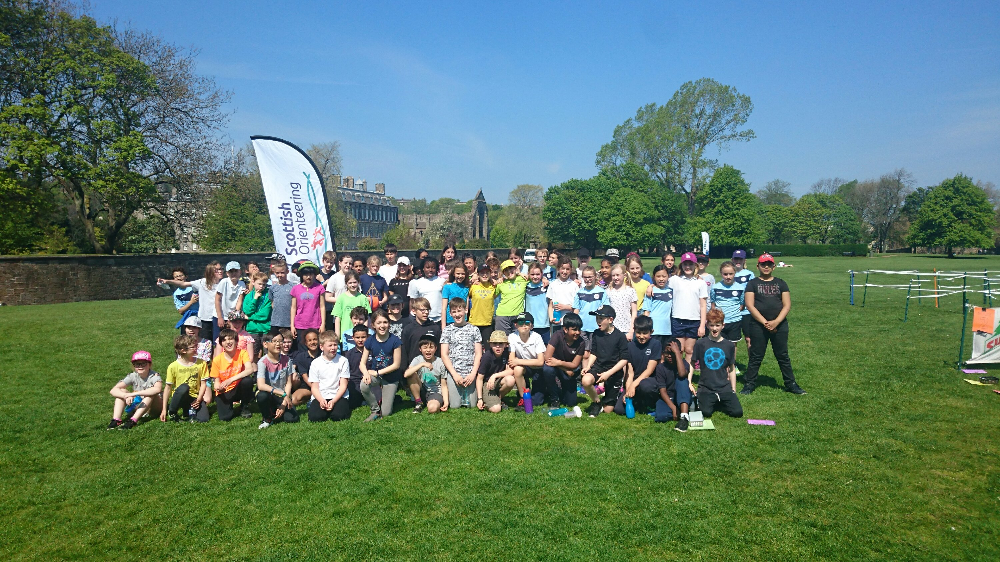

Ezen az oldalon egy jobb jövőbeli Magyar intézményt írtam le ahol a mai rendszer kisebb hibáit igyekeztem kikszöbölni, legjobb tudásaim szerint.Sokszor érintek fontos oktatásügyi kérdéseket amikről a mai napig vitatkoznak az ehhez értő személyek,én igyekeztem részletese, edukatív munkát végezni ahol azt írom le hogy én hogy képzelném el a jövő intézményet
Napjainkban nagyon sok iskola használ fizikai könyveket, és tanszereket, annak ellenére hogy már rengeteg mód lenne arra hogy mindezt digitalizáljuk.Számos oka van annak hogy még fizikai tanszereket használunk, az egyik például hogy sok iskola nem rendelkezik fejlett számítogéppel, és az ifrastruktúrájuk szinte egyenlő a nullával. A másik érv hogy a tanárok nem állnak készen egy ekkora mértékű ugrásra a digitális térben. A jövő iskolájának ilyen problémái nem lennének, ugyanis remélhetőleg 10 év távlatában, már a számítógépes infrastruktúra alap lesz minden iskolában,és a jövő ideális iskolájában a tanárok kötelező továbbképzésen vennének részt. A tanulóknak is sokka legyszerűbb lenne ha nem kéne a nehéz iskola táskákat cipelni folyamatosan, és a tananyag is sokkal elérhetőbb lenne a diákok számára.
A tiltás szinte soha nem vezet eredményhez és rövid távon visszaszorítja a tiltandó tevékenységet, hosszútávon szinte hatástalan,hiszen a űz emberek úgyis kijátszák a szabályokat.Ezzel nem azt mondom hogy mindent legalizálni kell, hanem azt hogy meg kell tanítani az embereket a felelősségteljes használatra. Ez így van a telfonokkal is, a telefon nem csak hasznos eszköz,de egy roppant harékony tanulás segítő kincs is amit a diákok egyszerűen fordíthatnák a saját javukra is. Egy progresszív iskola ösztönözné a diákokat arra hogy a telefonjukat helyesen és értelmesen használják. Erre nagyszerű lehetősűéget adhat:
néhány hasznos applikáció:
Ha valóban a diákok edukálása a legfontosabb akkor elősször tanítsuk meg a diákoknak azokat az eszközöket amik a kezükben vannak.
Nagyon sok iskola görcsösen tíltja az AI használatát, és csakúgy ahogy a telefon használatánál, itt sem a tiltás lenne a legfontosabb szempont hanem a felelős és felelősségteljes AI használat.
Az AI nem csak a diákoknak segíthete információ gyűjtésben, feladatok megoldásában, vagy csak egy anyag elmagyarázában,de atanároknak is segítheti a ötletekkel vagy kiegészítésekkel
Ez nem váltja ki az ember munkáját, csak kisegíti és megkönnyebíti.
Egy fejlett iskolának meg kell tanítania a diákokat az Ai helyes használatára mert nagyon sok diák még ezt is rosszul használjaÖsztönöznünk kell a diákokat arra, hogy az AI ne maguk helyett csinálja meg a feladatokat, ezzel helyettesítve az őket és tudásukat, hanem egy eszközként használják azt.
Véleményem szerint,a Magyar fiatalok egyik legnagyobb problémájuk az, hogy általános iskola vagy gimnázium után, nem tudják hogyan tovább, és nem tudnak szakosodni, ilyenkor esnek bele abba a hiába hogy olyan pályát választanak amit nem szeretnek vagy egyhelybe toporognak. Napjainkban egyre több iskola tart pályaorientációs megmozdulásokat, de nem biztos hogy az itt felvetett lehetőségek minden diák számára tud biztosítani megfelelő megolásokat.
erre létezik egy egyszerű megoldás:
Készítette:Szabó Patrik